Возрождение, или Ренессанс — имеющая мировое значение эпоха в истории культуры Европы,
пришедшая на смену Средним векам. Самые значительные изменения эпоха Возрождения вызвала в художественной культуре,
человек стал главной темой искусства, его ставили вровень с Богом. Считалось, что каждая личность способна
совершать открытия, просвещаться и добиваться успеха.
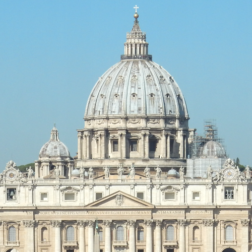
Инф.
Собор Святого Петра
площадь Святого Петра, Ватикан
Архитектура
Для архитектуры Возрождения характерны такие черты, как симметрия, соблюдение строгих пропорций,
простые геометрические формы, четкое деление на этажи и декоративное украшение фасадов.
В полной мере при строительстве используются колонны и ордерная система, заимствованная у античных архитекторов.
Филиппо Брунеллески
Филиппо Брунеллески
Один из величайших итальянских зодчих XV столетия. Флорентийский архитектор, скульптор,
ученый и инженер, Брунеллески работал во Флоренции в первой половине XV века – в период
Раннего Возрождения.
Брунеллески возвел во Флоренции целый ряд зданий, придавших архитектуре
принципиально новый импульс.
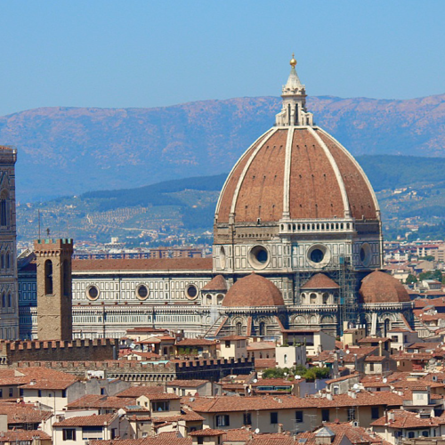
Инф.
Собор Санта-Мария-дель-Фьоре
Флоренция, Италия
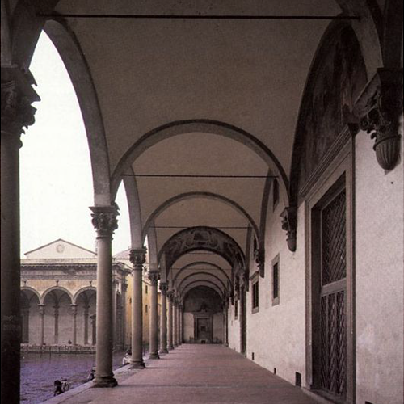
Инф.
Воспитательный дом
Флоренция, Италия
Он являлся наиболее выдающимся архитектором эпохи Возрождения.
Одним из его достижений было то, что он открыл и описал законы линейной перспективы в живописи,
что позволило художникам получать совершенные изображения трёхмерного пространства
на плоском полотне картины.
Закрыть
Скульптура
В средние века скульптура была неразрывно связана с архитектурой и не рассматривалась как отдельное искусство, однако же
с началом эпохи возрождения начался процесс отделения скульптуры, пропадает ее зависимость от архитектуры.
Скульптуры постепенно становятся отдельной самодостаточной ветвью искусства.
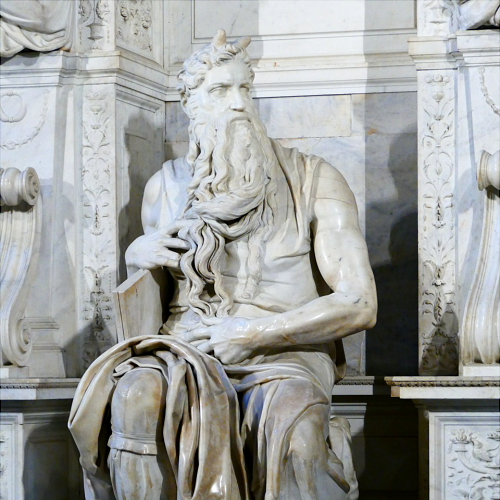
Инф.
Моисей
базилика Сан-Пьетро-ин-Винколи, Рим, Италия
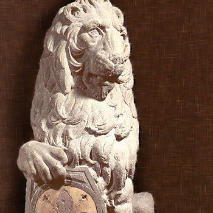
Инф.
Лев ”Марцокко„
Национальный музей Барджелло, Флоренция, Италия
Наряду с сохраняющими свое значение образами христианской мифологии и античности объектом изображения скульпторов
оказываются теперь и живые люди, герои современности.
Развитие получает жанр портрета, создаются конные статуи, украшающие площади городов.
Изобразительное искусство
Ранняя итальянская живопись эпохи Возрождения является вершиной мирового художественного наследия.
Многие живописные полотна эпохи Возрождения были зачастую крупномасштабны, выполнены в виде фресок из жизни
Христа, Девы Марии или святых.
Джотто ди Бондоне
Джотто ди Бондоне
Итальянский художник и архитектор, он являлся одной из ключевых фигур в истории западного искусства.
Преодолев византийскую иконописную традицию, стал основоположником итальянской школы живописи
и разработал абсолютно новый подход к изображению пространства.
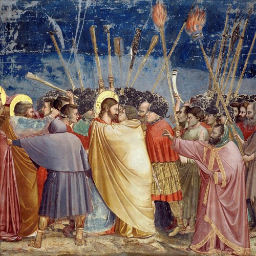
Инф.
Поцелуй Иуды
капелла Скровеньи, Падуя, Италия
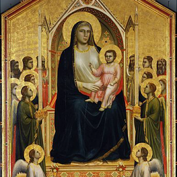
Инф.
Мадонна Оньисанти
в настоящее время находится в галерее Уффици, Флоренция, Италия
Он являлся наиболее выдающимся архитектором эпохи Возрождения.
Одним из его достижений было то, что он открыл и описал законы линейной перспективы в живописи,
что позволило художникам получать совершенные изображения трёхмерного пространства
на плоском полотне картины.
Закрыть
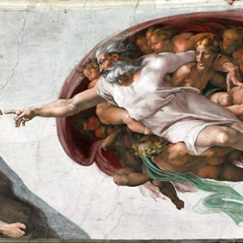
Инф.
Сотворение Адама
Сикстинская капелла, Ватикан
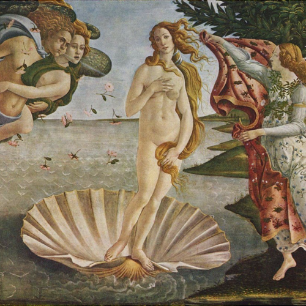
Инф.
Рождение Венеры
в настоящее время находится в галерее Уффици, Флоренция, Италия
С распространением Ренессансного гуманизма, художники обратились к украшению домов богатых покровителей.
Многие живописные полотна эпохи Возрождения были зачастую крупномасштабны, выполнены в виде фресок из жизни Христа,
Девы Марии или святых.
Леонардо да Винчи
Леонардо да Винчи
Известен не только как один из величайших художников и скульпторов Италии,
а также как величайший ученый, исследователь, инженер, химик, анатом, ботаник, философ,
музыкант и поэт.
Его творения, открытия и исследования опередили время на целые эпохи.
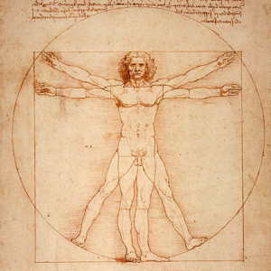
Инф.
Витрувианский человек
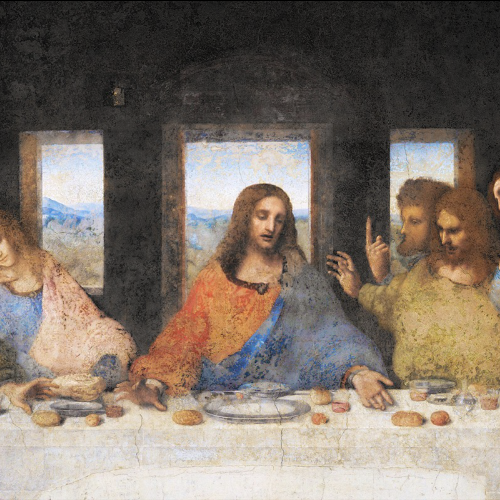
Инф.
Тайная вечеря
монастырь Санта-Мария-делле-Грацие, Милан, Италия
Многие из его произведений остались незаконченными, но тем не менее они оказали огромное влияние
и на современников, и на последующие поколения художников.
Леонардо да Винчи оставил огромное количество рисунков, которые хранятся главным образом
в Королевской коллекции в Виндзорском замке. Важнейшим источником для изучения
воззрений Леонардо да Винчи являются его записные книжки и рукописи.
Леонардо осознал и воплотил новую живописную технику. Линия у него имеет право на размытость,
потому что именно так ее видят люди.
Он осознал явления рассеяния света в воздухе и возникновения сфумато — дымки между зрителем
и изображённым предметом, которая смягчает цветовые контрасты и линии. В результате
реализм в живописи перешёл на качественно новую ступень.
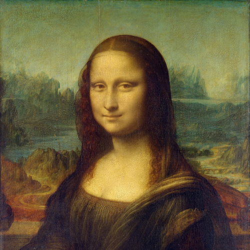
Инф.
Мона Лиза
в настоящее время находится в Лувре, Париж, Франция
Закрыть
В XIII веке в живописи зародилась система ренессансной перспективы.
Многие художники античности и средневековья изображали на картинах предметы, но только эпоха Возрождения
поставила перед ними задачу изображения не только предмета, а всего пространства.
Рафаэль Санти
Рафаэль Санти
Итальянский художник эпохи Ренессанса, гениальный график и мастер архитектурных решений,
он впитал опыт итальянский школы живописи.
В его полотнах, как в зеркале, отразились идеалы Возрождения.
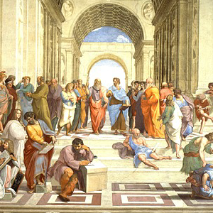
Инф.
Афинская школа
Апостольский дворец, Ватикан
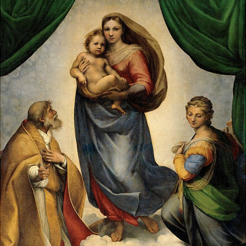
Инф.
Сикстинская Мадонна
Галерея старых мастеров, Дрезден, Германия
Рафаэль написал галерею из сорока двух картин Богоматери с младенцем. Не смотря на разнообразие
сюжетных линий, все эти произведения объединены трогательной прелестью материнства.
Недостаток материнской любви он переносил на свои полотна, идеализируя женщину, оберегающую младенца.
Закрыть
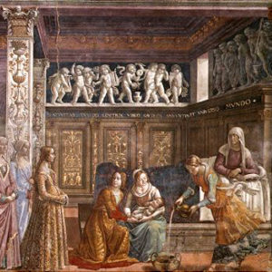
Инф.
Рождение Девы Марии
церковь Санта-Мария-Новелла, Флоренция, Италия